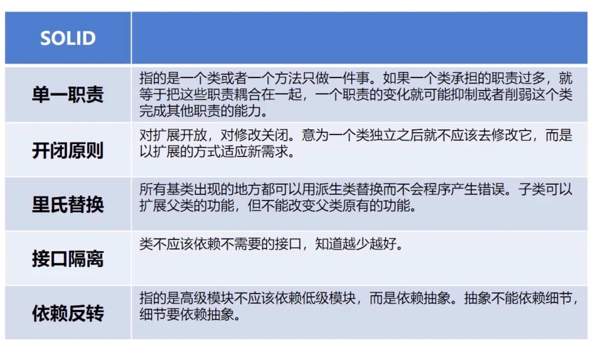
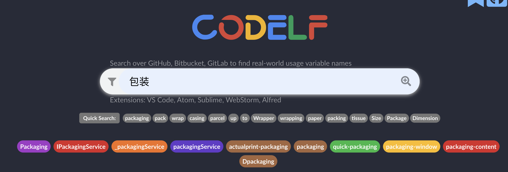

代码整洁之道
什么是好的代码？
简单，可读性强，具备可测性，可持续重构。
SOLID

什么是坏的代码？
- 过大的类；
- 难于理解难于阅读，命名混乱，结构混乱，
-
过长的方法函数，过长的参数列，临时变量过多，不利于理解和抽取；重复代码
-
一个类大量引用了另一个类的数据；
- 过度设计，过多的抽象。开始应该简单设计，变化来的时候再重构
命名的整洁
命名是一件难事，可以迫使你去思考你的类到底要实现什么功能。
Java常见命名规范：包名小写，变量/方法名驼峰，常量大写，枚举值大写
命名原则：见名知意，避免误报(Strin[] accountList)，读得出来，约定俗成(DNS,avg,min)，统一规范
命名工具：https://unbug.github.io/codelf/

类的整洁
优先考虑使用组合，而不是继承！！
如coffe类，新增巧克力coffee，无糖coffee，无糖巧克力coffee。继承会导致无法多继承，最重要的不好理解，尤其是debug时来回跳转。
函数的整洁
- 合理的参数：尽量零参数，参数越多越不好理解；避免三个参数以上，过多就应该封装成对象
- 保持同一层级：local,remote，不能local2，local2，remote。
- 避免副作用：不能在isExired()里做如果过期就删除的逻辑，如果要做应该改成delKeyIfExpired( )
- 异常代替错返回码。有时可以忽略异常，但是一定要加注释 wont happend,ignore等表明不是忘了，而且真的不会发生。抛出异常时尽量具体异常；也不要用异常来控制流程
注释的整洁
废话，甚至错误的注释
格式的整洁
单元测试
其实写单元测试很难，写出满足自动化，独立性，可重复（不依赖外部环境，网络，中间等）的测试代码很难